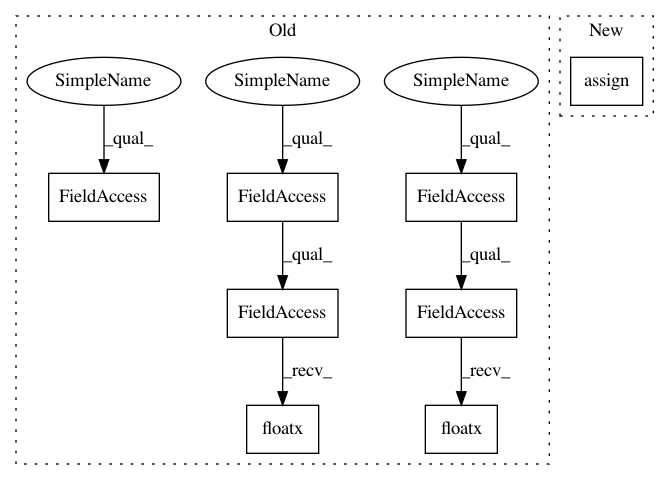

2a64a9d6d97a5c203bd58c0d039eb7e63c07e80f,snntoolbox/simulation/backends/inisim/ttfs.py,SpikeLayer,update_neurons,#SpikeLayer#,67
Before Change
self.add_update([(self.refrac_until, new_refrac)])
if self.spiketrain is not None:
self.add_update([(self.spiketrain, self.time * k.cast(
k.not_equal(output_spikes, 0), k.floatx()))])
// Compute post-synaptic potential.
psp = self.get_psp(output_spikes)
return k.cast(psp, k.floatx())
def linear_activation(self, mem):
Linear activation.
return k.cast(k.greater_equal(mem, self.v_thresh), k.floatx())
After Change
self.refrac_until.assign(new_refrac)
if self.spiketrain is not None:
self.spiketrain.assign(self.time * tf.cast(
tf.not_equal(output_spikes, 0), self._floatx))
// Compute post-synaptic potential.
psp = self.get_psp(output_spikes)
In pattern: SUPERPATTERN
Frequency: 3
Non-data size: 8
Instances
Project Name: NeuromorphicProcessorProject/snn_toolbox
Commit Name: 2a64a9d6d97a5c203bd58c0d039eb7e63c07e80f
Time: 2020-09-28
Author: bodo.rueckauer@gmail.com
File Name: snntoolbox/simulation/backends/inisim/ttfs.py
Class Name: SpikeLayer
Method Name: update_neurons
Project Name: NeuromorphicProcessorProject/snn_toolbox
Commit Name: 2a64a9d6d97a5c203bd58c0d039eb7e63c07e80f
Time: 2020-09-28
Author: bodo.rueckauer@gmail.com
File Name: snntoolbox/simulation/backends/inisim/ttfs.py
Class Name: SpikeLayer
Method Name: init_membrane_potential
Project Name: NeuromorphicProcessorProject/snn_toolbox
Commit Name: 2a64a9d6d97a5c203bd58c0d039eb7e63c07e80f
Time: 2020-09-28
Author: bodo.rueckauer@gmail.com
File Name: snntoolbox/simulation/backends/inisim/ttfs.py
Class Name: SpikeLayer
Method Name: update_neurons
Project Name: NeuromorphicProcessorProject/snn_toolbox
Commit Name: 2a64a9d6d97a5c203bd58c0d039eb7e63c07e80f
Time: 2020-09-28
Author: bodo.rueckauer@gmail.com
File Name: snntoolbox/simulation/backends/inisim/ttfs.py
Class Name: SpikeMaxPooling2D
Method Name: call